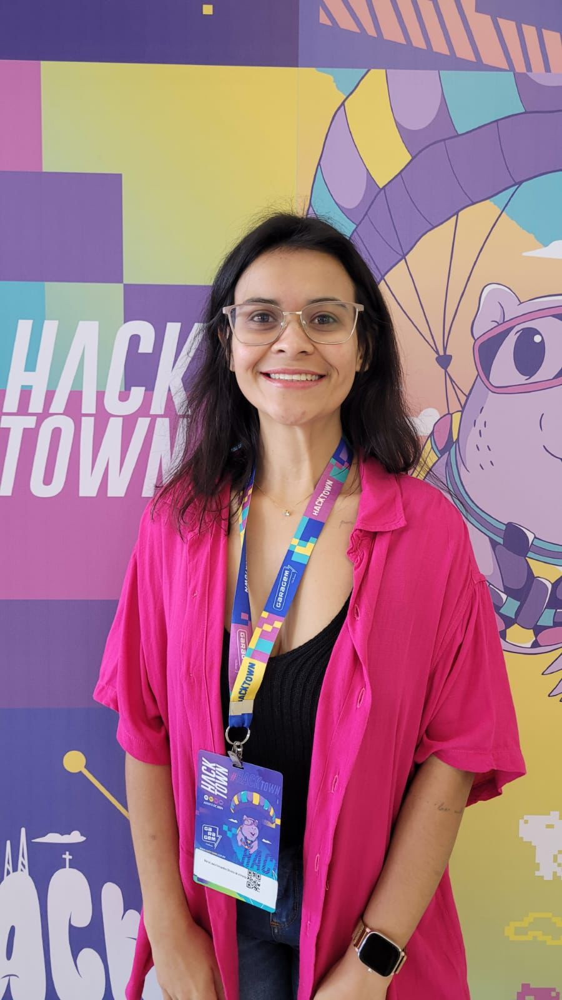

Portfólio: Thayná Almeida
Nutricionista com graduação e mestrado pela Universidade Federal de Lavras (UFLA), atualmente é estudante de Sistemas de Informação na Universidade Federal de Itajubá (UNIFEI).
Tenho experiência em pesquisa científica, o que me proporcionou sólida formação em análise de dados, estatística, escrita científica e gestão de projetos. Em tecnologia, adquiri conhecimentos em linguagens de programação e bancos de dados. Procuro oportunidades para aplicar e expandir minhas habilidades técnicas e analíticas em que eu possa conciliar meus conhecimentos na área da saúde e em análise de dados.
Github 